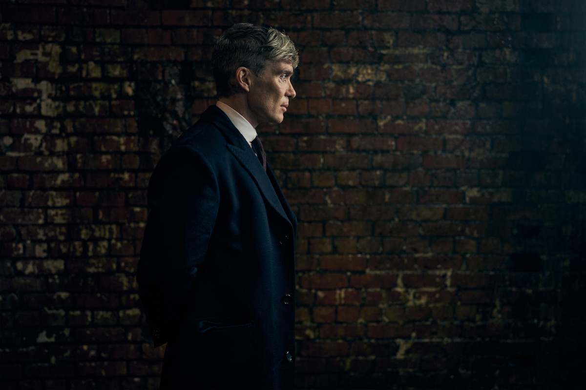

Après le succès phénoménal de la série télévisée, le film *Peaky Blinders* est enfin en préparation. Steven Knight, le créateur de la série, a annoncé que ce long-métrage serait l'occasion de conclure l'histoire de la famille Shelby, tout en introduisant de nouveaux personnages et en développant les intrigues qui ont captivé des millions de spectateurs.
Un retour à Birmingham
Le film se déroulera principalement à Birmingham, ville qui a servi de décor à la série, avec des scènes en extérieur capturant l'ambiance sombre et industrielle qui a fait le succès de la série.
Le casting du film
- Cillian Murphy : Thomas Shelby
- Paul Anderson : Arthur Shelby
- Helen McCrory : Polly Gray (présence confirmée en flashbacks ou dans des scènes en mémoire)
- Tom Hardy : Alfie Solomons
- Finn Cole : Michael Gray
- Stephen Graham : Nouveau personnage mystérieux
De quoi parlera le film ?
Le film clôturera la saga familiale des Shelby, en se concentrant sur les conséquences de leurs choix et les dernières batailles qui façonneront leur avenir. Le contexte historique reste ancré dans l'entre-deux-guerres, avec la montée du fascisme en Europe et les tensions sociales croissantes.
Le film, qui a maintenant terminé son tournage, sera une continuation épique de la saga de gangsters multi-récompensée en six saisons. Située à Birmingham entre 1919 et 1934, Peaky Blinders a suivi l'ascension (et parfois la chute) de la famille Shelby alors qu'elle naviguait dans un monde bouleversé par des changements sociaux, économiques et politiques radicaux.
« Je suis ravi de voir les caméras tourner pour ce nouveau chapitre de l’histoire de Peaky Blinders, qui se déroule pendant la Seconde Guerre mondiale », a déclaré le créateur de Peaky Blinders, Knight, à Netflix. « Le pays est en guerre, et bien sûr, nos Peaky Blinders aussi. »
Harper, qui a réalisé des épisodes de la première saison de la série en 2013, réalisera ce nouveau film d’après un script de Knight. « Lorsque j'ai réalisé Peaky Blinders il y a plus de 10 ans, nous ne savions pas ce que la série allait devenir, mais nous savions qu'il y avait quelque chose dans l'alchimie de l’équipe et de l’écriture qui était explosif », a déclaré Harper. « Peaky Blinders a toujours été une histoire de famille — et c’est donc incroyablement excitant de retrouver Steve et Cillian pour offrir ce film aux spectateurs du monde entier sur Netflix. »
« Il y a un grand sentiment d’anticipation et d’excitation parmi notre équipe de talentueux acteurs et techniciens », a ajouté Harper. « Nous sommes reconnaissants envers les fans qui nous ont permis d’en arriver là et nous croyons que ce prochain chapitre va offrir quelque chose d’extraordinaire. »
Réalisé par Steven Knight
Steven Knight, le créateur de la série, revient derrière la caméra pour ce long-métrage. Il promet de conserver le ton sombre et réaliste de la série, tout en offrant une conclusion satisfaisante aux fans.
Un film très attendu
Le film *Peaky Blinders* est très attendu, surtout après la fin de la série, où de nombreux fans espèrent voir les personnages principaux obtenir leur juste rétribution ou leur rédemption. Les fans sont impatients de découvrir le destin final de Thomas Shelby et de ses proches.
Une date de sortie en 2025
Le film *Peaky Blinders* est prévu pour une sortie en 2025, bien que la date exacte n'ait pas encore été confirmée. Les attentes sont élevées, et le film devrait être un événement majeur pour les fans de la série.
Une bande-annonce attendue
La première bande-annonce du film devrait être lancée quelques mois avant la sortie officielle, offrant un aperçu des derniers moments des Shelby sur grand écran.
Conclusion
Le film Peaky Blinders s'annonce comme un événement majeur pour les fans de la saga. En offrant une ultime confrontation aux Shelby et en plongeant dans un contexte historique sous haute tension, ce long-métrage promet une expérience immersive et intense. Entre règlements de comptes, alliances fragiles et enjeux politiques, il pourrait bien marquer l’histoire de la franchise.
Que pensez-vous de cette dernière aventure des Peaky Blinders ? Selon vous, Thomas Shelby parviendra-t-il à s'en sortir une dernière fois ou devra-t-il payer le prix de ses choix ? Quels personnages attendez-vous le plus dans ce film ? Partagez vos théories et attentes en commentaire !